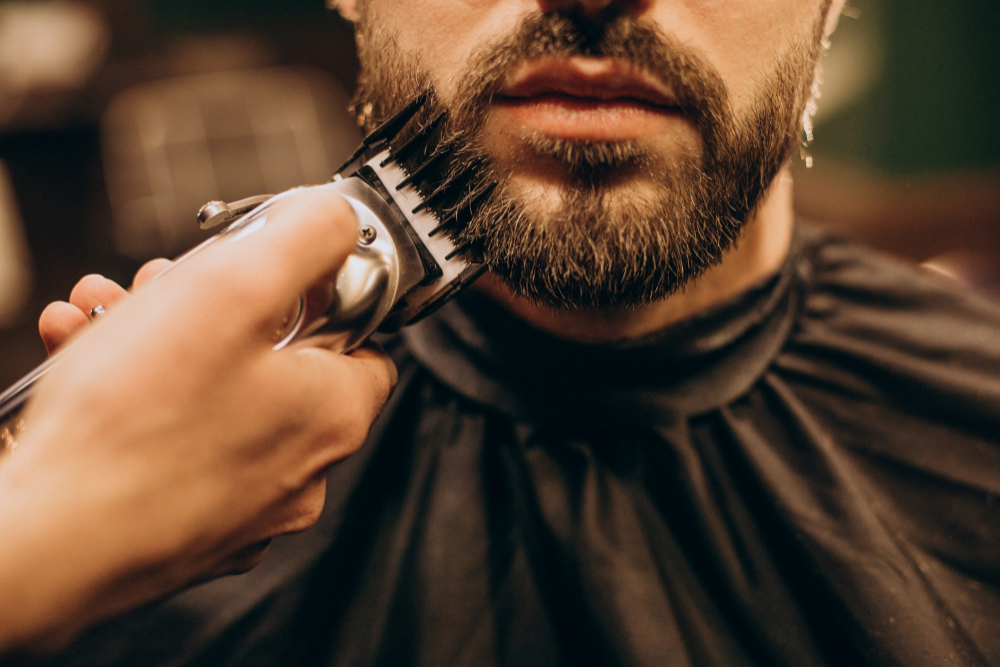

Sobre Nós

A barbearia Francis faz cortes em cabelos masculinos, nós temos funcionários especializados e a sua disposição, estamos abertos de Segunda à Sábado das 9:00 até as 20:00, já estamos no ramo desde 2010, mas sempre inovando e acompanhando a evolução dos cortes de cabelo.
Este site foi feito em homenagem ao meu cabeleireiro que cortou meu cabelo durante anos, mas que faleceu em 2024; isso é uma forma de dizer "obrigado" por tudo.